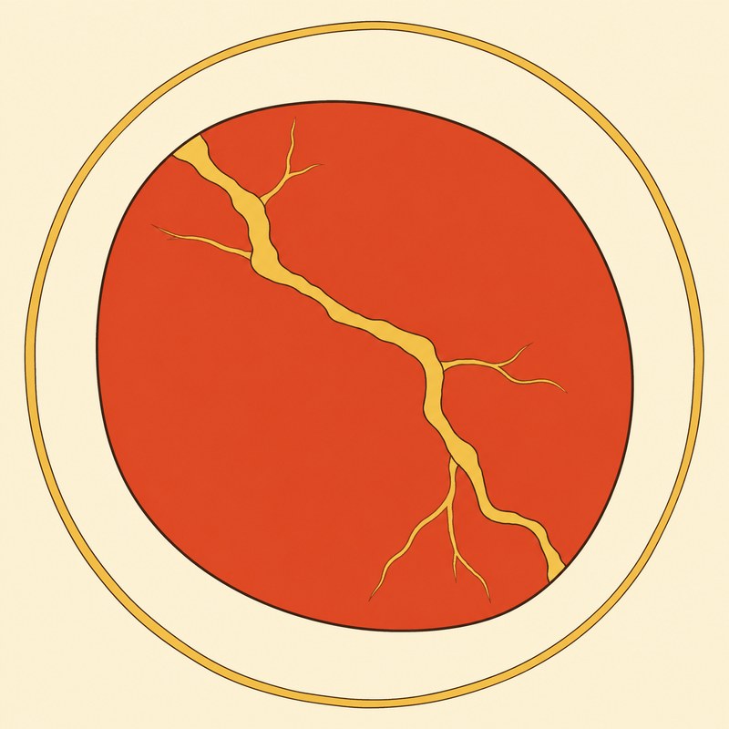
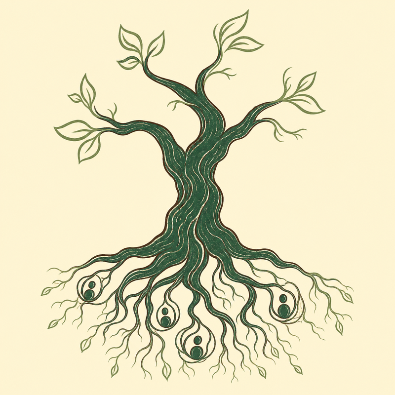

I partner with individuals, organizations, and campaigns to change policy, transform conflict, and sustain movement leaders.

Transforming how we move through conflict
"Conflict is the spirit of the relationship asking itself to deepen." — Malidoma Somé, Senegalese Elder
Most of us were never taught how to move through conflict in a way that deepens, rather than ends, relationships.
Unresolved conflict leads to bitter fights, broken hearts, severed belonging, and deep divisions in our movements that block systemic change.
The good news is that we can all learn how to move through conflict. I can share with you conflict-resolution practices, or I can directly facilitate processes for the situations you are facing — as long as all parties are willing to engage.
Breakdowns can become breakthroughs. What has been broken can be mended.
Transforming how we repair and end harm
More than half of survivors of violent crime in the United States do not call the police because they do not believe the system will help them. — Crime Survivors Speak, The Alliance for Safety and Justice
If you have experienced harm or crime, you do not have to suffer in silence. A restorative justice process can help you feel heard, validated, and more whole.
If you have caused harm, you do not have to collapse in shame or repeat cycles of violence. A restorative or transformative justice process can support you in taking responsibility and repairing harm to survivors and impacted communities.
I have facilitated restorative justice processes both as an alternative to prosecution and completely outside the criminal legal system. I have witnessed how much healing becomes possible when space is held with safety, rigor, and care for everyone involved.
Transforming policies and legislation
No matter how much we strive to heal ourselves and address violence in our communities, we cannot achieve long-term safety or justice without addressing systemic violence.
"Nothing stops a bullet like a job." — Father Greg Boyle
The absence of life-sustaining jobs in many of our communities is not accidental — it is a product of a long history of disinvestment from communities of color, lack of quality education, environmental racism, exclusionary housing, mass incarceration and more.
I became an attorney to help dismantle laws and policies that perpetuate systemic violence and racism, and to co-create policies that make healing possible. I understand that our struggles are linked, and so are our paths to liberation.
I offer legal consulting, legislative advocacy, policy research, and resolution drafting on topics such as:

Organize your team and turn your collective vision into reality.
What do we need to transform within ourselves and our organizations to have the impact we wish to have?
I have seen so many nonprofits offer critical services to the community but struggle to sustain their work over time. Maybe your staff are feeling burned out and you need a team retreat, or you feel that a strategic planning process is needed but is out of reach?
Let me know! I am happy to assess the challenges you face and help you find effective, low-cost solutions. I have facilitated staff retreats, strategic planning processes, community visioning sessions, corporate board meetings, political coalition meetings, and more.
Transforming our connection to our planet and ourselves
Are you a tired attorney struggling to sustain relationships and balance? A community organizer who cannot sleep at night? A policy advocate overwhelmed by the pace of change?
I have been there.
For those of us who feel the world's pain, "self-care" can sound shallow — and yet burning ourselves out is not an option. There is help. You are not alone.
I offer support that is not traditional therapy or life coaching, but grounded, practical ritual work: small practices of rest and reconnection woven into busy days, and deeper ceremonial experiences in nature. Together, we can design personalized practices and rituals that help you let go, listen, and build a sustainable path for your work and your life.
That's okay. Reach out and we'll figure it out together.
Start a conversation →